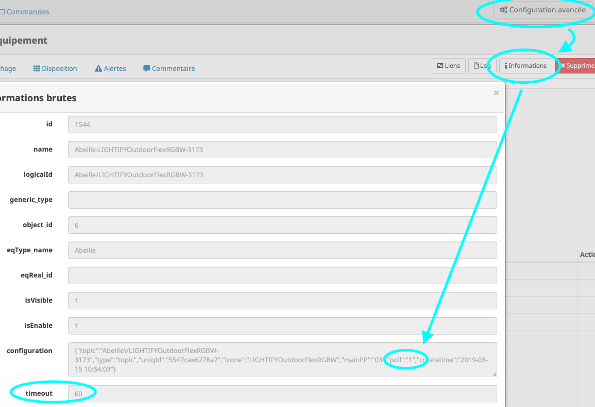

Actions régulières (cron)¶
Daily¶
Voisines¶
Une fois par jour, Abeille va interroger les équipements pour obtenir leurs informations radio (voisines).
Hourly¶
IKEA¶
Refresh Ampoule Ikea Bind et set Report
Les ampoules Ikea ont une certaine tendance à oublier leur configuration alors on refait les bind et set report.
1/4 d’heure¶
pl2303¶
Le driver pl2303 sur les RPI qui controle le module TTL-USB n’est pas super stable donc on verifie que tout va bien sinon on redémarre.
Ping¶
Tous les équipements qui ont un champ « battery_type » vide vont recevoir un message auquel ils doivent répondre pour vérifier qu’ils sont bien en vie.
Poll¶
Les équipments qui ont une variable poll dans leur configuration à _15_, vont recevoir deux messages (Manufacturer/Location) auxquels ils doivent répondre pour vérifier qu’ils sont en vie.
Pour vérifier la valeur, dans ce cas c’est 1 par exemple.
Minutes¶
Ping¶
Ping (getVersion) de la zigate pour être sûr qu’elle est présente et fonctionne.
Poll¶
Les équipments qui ont une variable poll dans leur configuration à _1_, vont recevoir deux messages (Manufacturer/Location) auxquels ils doivent répondre pour vérifier qu’ils sont en vie.
Pour vérifier la valeur, dans ce cas c’est 1.
Health¶
En fonction de la date de la derniere communication avec l’équipement, les etats de TimeOut sont positionnés.
Inclusion¶
On demande à la Zigate si elle est en mode Inclusion ou non.